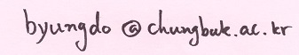

General Topology I
Course 7412016 Section 01, Spring 2024
Thursdays 10:00 - 11:50, Fridays 11:00 - 11:50, Room: E1-2 #306
Chungbuk National University
Instructor: Dr. Byungdo Park Email: 
Office Hours: Wednesdays 15:00--15:50 at E1-1 Room 110.
Syllabus: PDF
Announcements
2024-06-04: We will not meet on Fridays June 7th and the 14th. These classes will go online. Watch the lecture through eCampus by the final exam date.
2024-06-04: The class will go online for June 6th the Memorial day. Watch the lecture through eCampus by the final exam date.
2024-06-04: Homework #7 has been posted below.
2024-06-02: We will not meet on June 14th Friday at 11:00, and instead, there will be a make-up class on June 7th 10:00 at E1-1 Room 140.<\s>
2024-05-27: Final exam announcement The detail has been posted below.
2024-05-27: Review report of the 1st course evaluation survey will not be posted because there is no items to address.
2024-05-21: Homework #6 has been posted below.
2024-05-21: Homework #5 has been posted below.
2024-04-30: The midterm exam papers have been graded. If you want to see your graded paper or to just receive your score by email, please email me no later than Tuesday, May 7th 23:59. Please read the email announcement for more details.
2024-04-11: Midterm exam announcement The detail has been posted below.
2024-04-21: The midterm exam will cover Chapters 4 to 7 including homework problems therein.
2024-04-21: Homework #4 has been posted below.
2024-04-19: Today's lecture was video-recorded and is available at eCampus.
2024-04-16: Homework #3 has been posted below.
2024-04-12: Announcements The class will go online for today's 11:00 class. Watch the lecture through eCampus by April 26th.
2024-04-11: Midterm exam announcement The detail has been posted below.
2024-04-04: Homework #2 has been posted below.
2024-03-17: Homework #1 has been posted below.
2024-03-01: Lecture notes will be made available on CBNU eCampus hopefully by the weekend of each class meeting.
2024-03-01: Announcements Here are procedures specifying details in the dispute policies.
2024-03-01: Welcome!
Homework
Homework #1 11 problems.
Problems from Chapter 4: #9, 15, 16, 34, 43, 45, 53, 54, 55, 58, 64.
Homework #2 23 problems.
Problems from Chapter 5 (Part 1): #5, 9, 10, 11, 14, 16, 19, 20, 33, 35, 55, 56, 59, 60, 64, 65, 68, 69, 70, 73, 76, 78, 79
Homework #3 15 problems.
Problems from Chapter 5 (Part 2): #44, 48, 50, 82, 87, 89
Problems from Chapter 6: #7, 8, 10, 11, 13, 34, 35, 38, 39
Homework #4 11 problems.
Problems from Chapter 7: #2, 14, 23, 27, 32, 33, 35, 37, 38, 42, 43
Homework #5 16 problems.
Problems from Chapter 8: #3, 4, 18, 19, 30, 33, 35, 36, 40, 46, 50, 51, 52, 55, 57, 60
Homework #6 14 problems.
Problems from Chapter 9: #10, 14, 17, 20, 22, 26, 27, 28, 29, 31, 34, 35, 36, 38
Homework #7 11 problems.
Problems from Chapter 10: #5, 6, 7, 13, 22, 24, 31, 33, 34, 37, 38
Exam Schedules
Midterm exam: 25 April (Thursday) 10:00--11:40 in-class.
- Coverage: Chapters 4, 5, 6, and 7 (only up what we covered by April 19th).
- Total 8 questions. There will be one set of True/False questions (Please note that you get full credit if you are correct, no credit for no answer, and negative of the assigned score if your answer to this question is incorrect). This exam will be geared toward giving advantages to those who were carefully following class discussions while keeping a good pace of doing homework.
- If you cannot make it to the in-class exam due to an official cause (including properly documented illness), you have to submit a Make-up Exam Application Form at your department. Here is a handout about make-up exam policies.
The average was 38.82. The maximum score achieved by a student was 92.
Final Exam: 13 June (Thursday) 10:00--11:40 in-class.
- Coverage: Everything covered in this course including all homework problems.
- Total 8 questions. There will be one set of True/False questions (Please note that you get full credit if you are correct, no credit for no answer, and negative of the assigned score if your answer to this question is incorrect). This exam will be geared toward giving advantages to those who were carefully following class discussions while keeping a good pace of doing homework.
- If you cannot make it to the in-class exam due to an official cause (including properly documented illness), you have to submit a Make-up Exam Application Form at your department. Here is a handout about make-up exam policies.
Assessment of Project-Based Learning (PBL)
For an extra credit, you should record a 20-minute long video lecture about one of the following:
(1) A sample lecture on any topic listed on the syllabus of this course.
(2) A sample lecture on a concept from secondary school geometry curricular.
You should submit the video in a form of a YouTube video link by choosing the sharing option "unlisted." Please use this form to submit your work.
Your video will be disclosed to your classmates in this course as a part of a YouTube playlist. You may turn your video into “private” or even delete the video after your letter grade for this course is assigned.
Links
Webpage of Byungdo Park
CBNU Mathematics Education Department Homepage